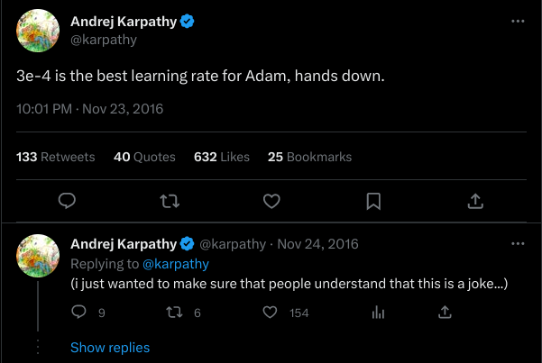
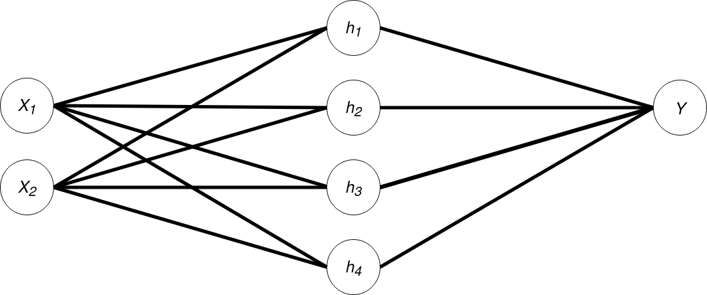

Demystifying Deep Learning
An Introduction to Neural Networks for Social Scientists
Dr Musashi Jacobs-Harukawa, DDSS Princeton
23 Mar 2023
Motivation
Who is this for?
- Many social scientists use quantitative approaches to study complex questions.
- Familiarity with statistics, maybe also machine learning.
- But deep learning seems daunting.
- Aim is not to simplify subject, but to translate existing knowledge and expertise.
What is Deep Learning?
- Approach to using computers to learn patterns in data
- based around a modular set of tools loosely inspired by biological neurons.
Why learn about Deep Learning?
- Opportunity: incredibly
powerful tool for modelling complex processes
- Image processing (Computer Vision)
- Language (Natural Language Processing)
- Engagement: increasingly applied
in social sciences
- Extracting visual features (Torres and Cantú 2021); Multiple imputation (Lall and Robinson 2021); Multilingual embeddings (Licht 2023); Automated coding of videos (Tarr, Hwang and Imai 2023)
- Relevance: Increasingly directly affecting society
Why learn the fundamentals?
- Can get by with minimal understanding of “how” it works.
- But we’re also interested in characterizing scope of claims, predictions.
- DL is about scaling; fundamentals scale.
Learning Objectives
The basic building block of neural networks: artificial neurons.
How to learn from data with optimization.
How and why “ensembling” neurons is powerful.
An intuition for an “engineer’s approach” to modelling data.
tl;dr (Lecture in One Slide)
- Neural networks are basically nested regression models with discontinuities.
- Loss gradients link model parameters to the overall accuracy of the model.
- Backpropagation is a technique that allows us to calculate the loss gradient of every parameter in a network.
- Gradient descent is an algorithm for updating parameters using loss gradients to improve accuracy.
- By “stacking” neurons and introducing discontinuities, we can learn complex patterns in data.
Simple Case: One X, One Y
We learn how to “manually” fit linear regressions.
Problem
- We observe two processes, \(y\) and \(x\).
- We want to describe the average linear relationship between them.
- Model: \(y = \beta_1x + \beta_0\)
- Parameters: \(\beta_1\) and \(\beta_0\) ← find optimal values for these
- In their language:
- \(\beta_1\) is \(w\) (weight)
- \(\beta_0\) is \(b\) (bias).
Data (and OLS Solution)
A General Procedure for Fitting Models
- Begin with a random guess of the correct model.
- Generate prediction using model and data.
- Measure error.
- Use this information to adjust the model.
A Random Guess
- \(w_{init} = 0.77\), \(b_{init} = -0.15\)
Starting with a Single Data Point
- We can do this procedure with one, a few, or all data points.
- The difference is non-trivial, but the procedure is the same.
- Begin with single point for simplicity.
- \((x, y) = (1.37, 3.91)\)
Generate Prediction
- Generate prediction:
- \(\hat{y} = wx + b\)
- \(x=1.37\)
- \(0.91_{\hat{y}} \approx (0.77)_w\times(1.37)_x + (-0.15)_b\)
- Called Forward Pass
Computing Loss
- True \(y\) is
\(3.91\).
- Error: \(y-\hat{y}=3.00\)
- Loss function: \(L(w,
b)\)
- Expresses loss as function of \(w\) and \(b\)
- Squared Error: \(L(w, b) = (y - \hat{y})^2\)
- We need to square or take the absolute value.
- Why? Will become clear.
How can we use this information?
- Aim: find values of \(w\) and \(b\) that make model as correct as possible.
- Alternatively: find \(w, b\) that minimize our error.
- We can use partial derivatives!
- \(\frac{\delta L(w, b)}{\delta w}\): describes how \(L\) changes as we adjust \(w\).
- \(\frac{\delta L(w, b)}{\delta b}\): describes how \(L\) changes as we adjust \(b\).
Understanding Gradients
- I find calculating it “by hand” helps me understand what’s happening.
- Definition of a partial derivative:
\[ \frac{\delta f(x)}{\delta x} \;=\; \lim_{h \to 0} \frac{f(x+h)-f(x)}{h} \]
Numerical calculation
\[ \frac{\delta f(x)}{\delta x} \;=\; \lim_{h \to 0} \frac{f(x+h)-f(x)}{h} \]
How do we use this gradient?
\(-8.23\) tells us:
- when \(x=1.37\)
- if we increase \(w\) by \(1\)
- our loss will decrease at a rate of \(8.23\)
- So we should increase \(w\).
Visualizing the Gradient
How much to adjust \(w\)?
- Why not change \(w\) to minimize loss for each observation?
Gradient Descent
\[ w' = w - \eta \frac{\delta L(w, b)}{\delta w} \]
- \(w\) is the current value of the parameter
- \(\frac{\delta L}{\delta w}\) is the partial derivative of the loss function wrt the parameter.
- \(w'\) is the new value of the parameter
- \(\eta\) is the Learning Rate.
How large is \(\eta\)?
- Usually some small value (\(0.05\) or smaller).
- Hyperparameter and its optimal value is an empirical question.
- Meme value is \(3e-4\)

Our New Model
Repeat for Full Dataset (One Epoch)
Stochastic, Batch, Mini-Batch
- Stochastic: one observation at a time
- Batch: whole dataset at once
- Mini-batch: smaller-than-dataset batches
- For batch and mini-batch, we need a different loss
function
- Mean Squared Loss: \(\frac{1}{N}\sum_i(y_i - \hat{y})^2\)
What did we just learn?
A slower and less precise method for linear regression.- We can use the partial derivative of a loss
function…
- the direction of decreasing loss
- … to adjust the parameters of a model…
- gradient descent updates
- … to fit it to our data.
Two X, Binary Y
Where linear regression won’t cut it.
Challenging Shape
Two Inputs

is the same as
\(Y = \beta_2X_2 + \beta_1X_1 + \beta_0\)
Random Initialization
Model After Training
Doing Better
For this data, we want a model that can:
- Fit a more complicated response surface (than a straight line)
- Do classification instead of regression
What if we started layering our models?

- \(h_1 = w_{1}x + b_{1}\)
- \(y = w_{2}h_1 + b_{2}\)
- \(y = w_{2}(w_{1}x + b_{1}) + b_{2}\)
And stacking it?

- \(h_i = w_{1i}x + b_{1i}\) (bias omitted from diagram for simplicity)
- \(y = \sum_i w_{2i}h_i + b_{2i}\)
- \(y = \sum_i w_{2i}(w_{1i}x + b_{1i}) + b_{2i}\)
We could create a model like this:

But how do we train this model?
- If we can calculate loss gradients, we can use Gradient Descent.
- Define loss wrt parameters: \(L(w_1, b_1, w_2, b_2)\)
- How do we calculate \(\frac{\delta L}{\delta w_1}\), \(\frac{\delta L}{\delta w_2}\), etc.?
- We could use the numerical method before.
- But this requires 2 forward passes per parameter.
- There’s something much faster.
Backpropagation
- Using the chain rule, we can state all gradients as a product of gradients on this graph.
- From this we can derive expressions for all gradients as functions of known parameters, initial input and final output.
- DL libraries manage all of this under the hood.
Breaking down \(L(w_1, b_1, w_2, b_2)\)

- \(L = (y -
\hat{y})^2\)
- \(\frac{\delta L}{\delta \hat{y}} = 2(y-\hat{y})\)
- \(\hat{y} = w_{2}h_1 +
b_{2}\)
- \(\frac{\delta \hat{y}}{\delta w_2} = h_1\)
- \(\frac{\delta \hat{y}}{\delta h_1} = w_2\)
- \(\frac{\delta \hat{y}}{\delta b_2} = 1\)
- \(h_1 = w_{1}x +
b_{1}\)
- \(\frac{\delta h_1}{\delta w_1} = x\)
- \(\frac{\delta h_1}{\delta b_1} = 1\)
Gradient for \(w_1\)
\(\frac{\delta L}{\delta \hat{w_2}} = ?\)
- \(\frac{\delta L}{\delta \hat{y}} = 2(y-\hat{y})\)
- \(\frac{\delta \hat{y}}{\delta w_2} = h_1\)
Applying the chain rule:
\[\begin{align} \frac{\delta L}{\delta w_1} &= \frac{\delta L}{\delta\hat{y}} \frac{\delta \hat{y}}{\delta w_2} \\ &= 2(y-\hat{y}) h_1 \\ &= 2(y-(w_{2}(w_{1}x + b_{1}) + b_{2})) w_{1}x + b_{1} \end{align}\]
Gradient for \(w_2\)
\(\frac{\delta L}{\delta \hat{w_1}} = ?\)
- \(\frac{\delta L}{\delta \hat{y}} = 2(y-\hat{y})\)
- \(\frac{\delta \hat{y}}{\delta h_1} = w_2\)
- \(\frac{\delta h_1}{\delta w_1} = x\)
Applying the chain rule:
\[\begin{align} \frac{\delta L}{\delta w_1} &= \frac{\delta L}{\delta\hat{y}} \frac{\delta\hat{y}}{\delta h_1} \frac{\delta h_1}{\delta w_1} \\ &= 2(y-\hat{y}) w_2 x \\ &= 2(y-(w_{2}(w_{1}x + b_{1})) + b_{2}) w_{2}x \end{align}\]
Theory in Code
Mini-Batch Gradient Descent with MSE Loss
# Define Model
layer1 = SimpleLinearNN(features_in=2, features_out=4)
layer2 = SimpleLinearNN(features_in=4, features_out=1)
model = torch.nn.Sequential(layer1, layer2)
# Define Batch Sampler, Loss Function and Optimization
data = DataLoader(dataset, batch_size=8, shuffle=True)
loss_fn = torch.nn.MSELoss()
optim = torch.optim.SGD(model.parameters(), lr=5e-4)Training a Model for 50 Epochs
# Define Model
layer1 = SimpleLinearNN(features_in=2, features_out=4)
layer2 = SimpleLinearNN(features_in=4, features_out=1)
model = torch.nn.Sequential(layer1, layer2)
# Define Batch Sampler, Loss Function and Optimization
data = DataLoader(dataset, batch_size=8, shuffle=True)
loss_fn = torch.nn.MSELoss()
optim = torch.optim.SGD(model.parameters(), lr=5e-4)
# Training
for epoch in range(50):
for inputs, labels in data: # X, y
optim.zero_grad() # Reset gradients
preds = model.forward(inputs) # Forward pass
loss = loss_fn(preds, labels) # Loss calc
loss.backward() # Calculate gradients
optim.step() # Update parametersBut: does it do better?
- Turns out: stacking/layering linear models reduces to a linear model!
Deep Learning Basics
Now we’re doing deep learning!
The Missing Ingredient
- Final missing ingredient is non-linear activation functions.
- You already know an example: logistic regression!
Logistic regression?
Two components:
- Linear model: \(z = \beta_1x + \beta_0\)
- Sigmoid transformation: \(y = \frac{1}{1+e^{-z}}\)
- \(\sigma(x)\) bounded between 0 and 1
- When \(x=0\), \(\sigma(x)=0.5\).
Artificial Neuron
- Logistic regression is an example of an artificial neuron, the basic building block of neural networks.
- Generally: activation function \(\phi(\cdot)\) applied to weighted sum of inputs \(\sum_i w_ix_i\):
\[ y = \phi(\sum_i w_ix_i) \]
Neuron with Sigmoid Activation
- Flat decision boundary
- Predictions bounded between 0 and 1
Deep Neural Network: 2-4-1
Wider and Deeper Neural Network: 2-8-8-1
When to stop training?
Difficult question. A plausible strategy is:
- Leave some training data out for evaluation.
- Stop training when loss on data passes some threshold.
2-4-1 Network with Eval Loss <= 0.52
More Complex Networks Generally Converge Faster
Other Activation Functions
- Note technically, for backpropagation to work, partial derivative must be defined.
ReLU Example
model = nn.Sequential(Perceptron(2, 4, nn.ReLU),
Perceptron(4, 4, nn.ReLU),
Perceptron(4, 4, nn.ReLU),
Perceptron(4, 1, nn.Sigmoid))Recap
Comprehension Check
- Neural networks are basically nested regression models with discontinuities.
- Loss gradients link model parameters to the overall accuracy of the model.
- Backpropagation is a technique that allows us to calculate the loss gradient of every parameter in a network.
- Gradient descent is an algorithm for updating parameters using loss gradients to improve accuracy.
- By “stacking” neurons and introducing discontinuities, we can learn complex patterns in data.
Next Time
- Scaling up further: modular architectures and mechanisms.
- “Pretraining” models: self-supervision and transfer learning.
- Generative models: autoregressive language generation.
- Architectures for sequences: recursive neural networks (RNNs), Transformers.